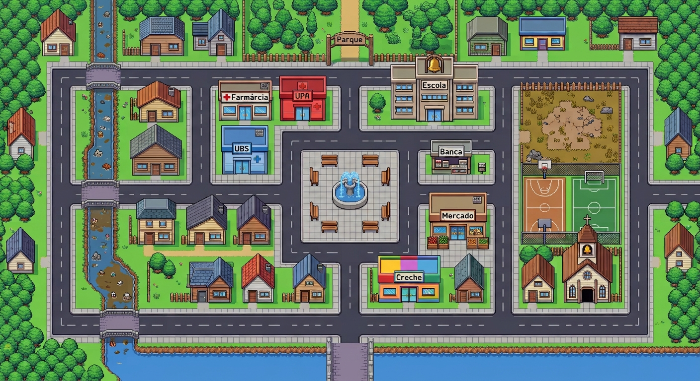
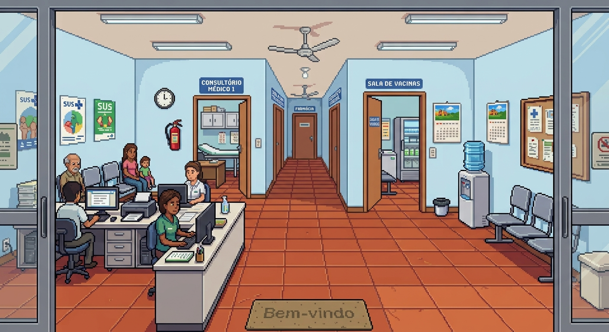
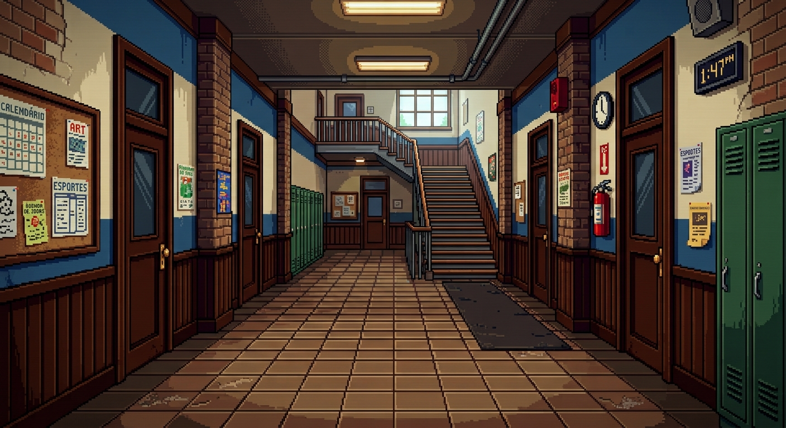
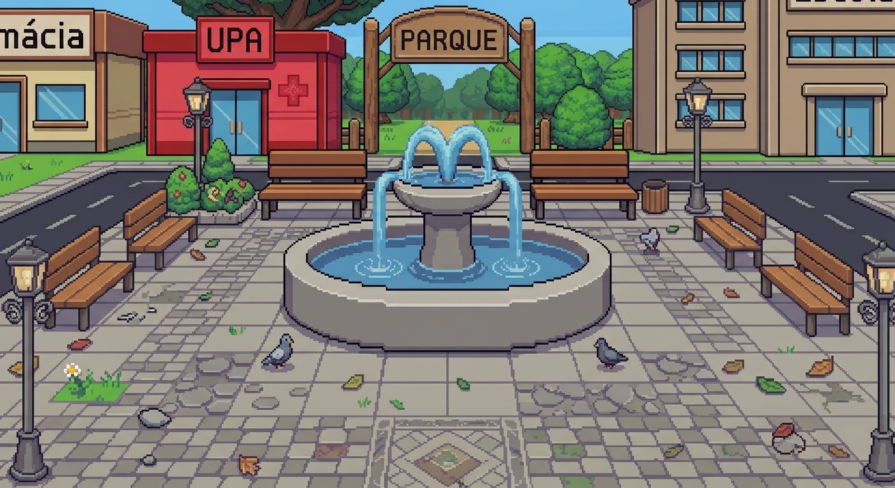
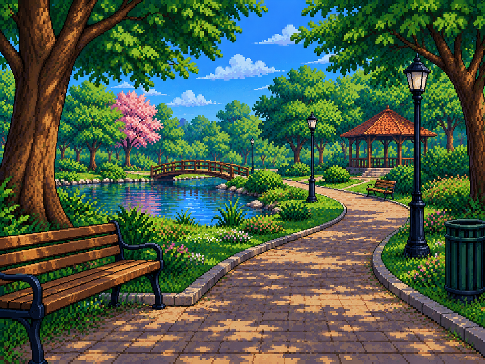

Passo 1

O bairro é o seu mapa
UBS, escola, mercado, farmácia, praça, córrego, terreno baldio. Cada ponto guarda missões sobre o que acontece ali. Escolha por onde começar.

UBS, escola, mercado, farmácia, praça, córrego, terreno baldio. Cada ponto guarda missões sobre o que acontece ali. Escolha por onde começar.

As perguntas são escritas pela equipe de Medicina e chegam na medida da sua idade. Marque a alternativa, confirme e veja na hora o resultado.

Quando a resposta não for a certa, o jogo explica o porquê e devolve a pergunta. Ninguém perde nada por tentar — a ideia é sair sabendo mais.

Saúde, Educação, Vacinação, Vetores, Limpeza, Alimentação, Exercícios e Felicidade. Cada acerto alimenta as barras daquele assunto.

Os acertos viram XP, o XP vira nível e o nível vira patente. No caminho você conquista insígnias para a sua estante.